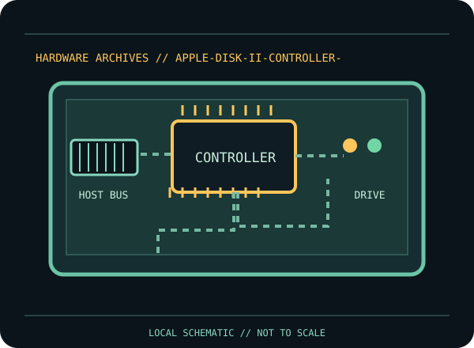

[ INDIVIDUAL COMPONENT // FLOPPY DRIVES ]
Apple Disk II Controller Card
This record identifies a documented physical floppy drive, controller, or preservation interface. It separates confirmed model facts from details that vary by suffix, board revision, host, media and configuration.

IDENTIFICATION NOTE: Match the full model/part number, revision, connector and manual before use. Similar family names do not establish interchangeable mechanics or host compatibility.
Model specifications
| Catalog subcategory | Floppy controller cards |
|---|---|
| Exact model / family | Apple Disk II Controller Card |
| Era / product family | Apple II Disk II subsystem controller card |
| Documented characteristics | Physical controller board supplied as part of the Apple Disk II subsystem. Apple’s subsystem manual describes the controller/drive installation as a coordinated system; individual board revisions should be matched to the card markings and supported Apple II host. |
| Interface / connectors | The card installs in an Apple II expansion slot and connects to the Disk II mechanism with its documented ribbon cable. This is not a standard PC floppy controller; connector orientation and slot compatibility must be checked in the Apple documentation. |
| Host and media compatibility | Designed for the Apple II Disk II system and compatible slot-equipped Apple II hosts as specified by Apple. Disk II encoding, DOS and copy-protection behavior are not equivalent to IBM PC formats; use an Apple-aware controller/imager for preservation. |
Model-specific compatibility checks
- Identify the complete model/suffix, board revision, serial/date codes and connector arrangement from the physical unit; photograph all labels before installation.
- Designed for the Apple II Disk II system and compatible slot-equipped Apple II hosts as specified by Apple. Disk II encoding, DOS and copy-protection behavior are not equivalent to IBM PC formats; use an Apple-aware controller/imager for preservation.
- Confirm the host controller, drive wiring, power, drive select, termination, media density and recording format against the cited model documentation. Do not infer a fit or capacity solely from the drive size or connector shape.
Preservation and service notes
Disconnect system power before inserting/removing the board. Observe Apple’s cable orientation and installation instructions; inspect edge contacts and cable pins before use. Preserve original card revision/ROM markings and capture protected or unusual disks with suitable preservation hardware rather than repeatedly retrying in a stock system.
Keep original media and raw captures intact. Log the exact drive/controller/software configuration, acquisition date, condition and any service performed; checksum verified copies before creating derivatives.
Manufacturer documentation & sources
- Apple — Disk II Floppy Disk Subsystem Installation and Operating ManualApple-authored subsystem manual covering the Disk II controller, drive, installation and operation.
Sources are model-specific manufacturer documentation or archival copies of the original source. Where a document covers a family or multiple revisions, confirm its applicability to the exact unit before using an electrical or service specification.